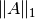
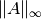
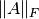
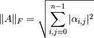
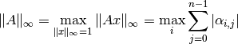
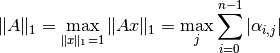
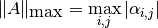

Norms¶
Several matrix norm routines are provided for general, Hermitian, and symmetric (distributed) matrices; each of the following routines can return either , ,  (the Frobenius norm), or the maximum entrywise norm. The matrix two-norm is quite expensive to directly compute, so a probabilistic algorithm (based upon Dixon’s approach) will be added in the near future.
- type NormType¶
An enum that can be set to either
FROBENIUS_NORM:

INFINITY_NORM:

ONE_NORM:

MAX_NORM:

Norm¶
For computing norms of fully-populated matrices.
- R Norm(const Matrix<R>& A, NormType type=FROBENIUS_NORM )¶
Return the norm of the fully-populated real matrix A.
- R Norm(const DistMatrix<R, MC, MR>& A, NormType type=FROBENIUS_NORM )¶
Return the norm of the fully-populated real distributed matrix A.
HermitianNorm¶
Same as Norm, but the (distributed) matrix is implicitly Hermitian with the data stored in the triangle specified by UpperOrLower.
SymmetricNorm¶
Same as Norm, but the (distributed) matrix is implicitly symmetric with the data stored in the triangle specified by UpperOrLower.